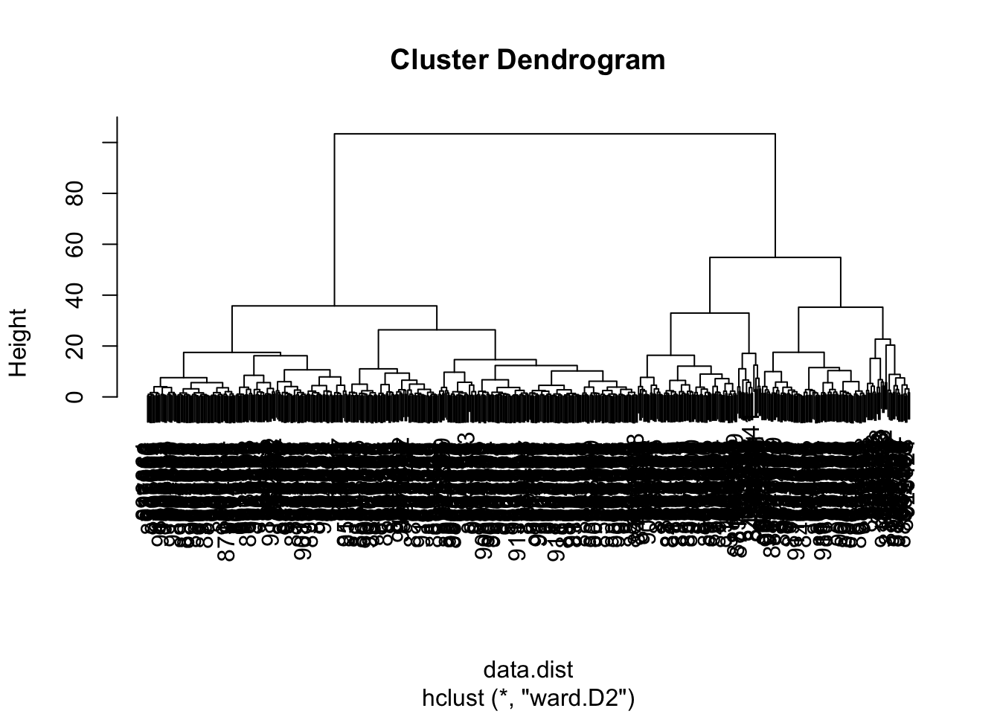
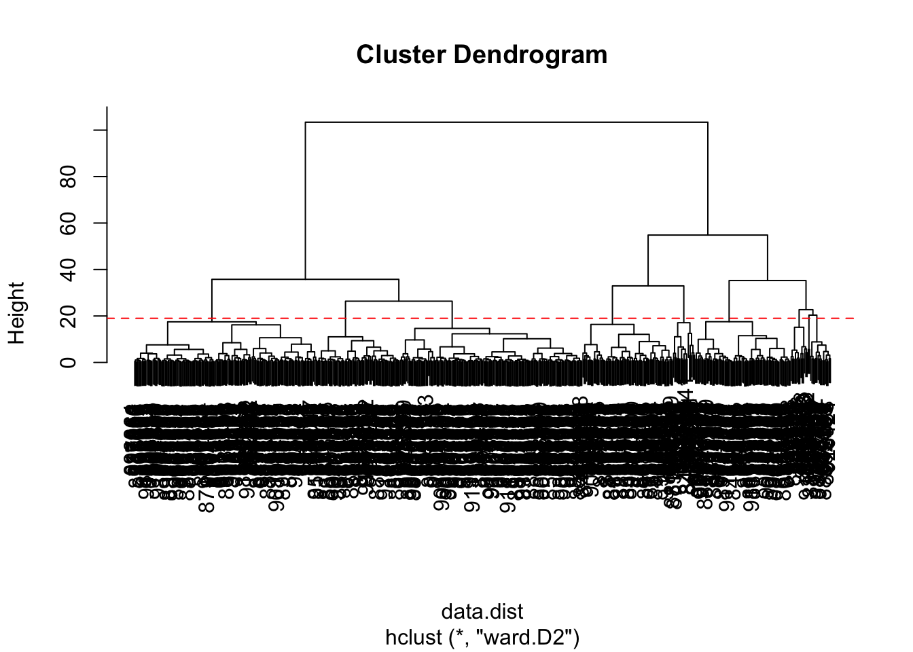

fna.data <- "WisconsinCancer.csv"
wisc.df <-read.csv(fna.data, row.names=1)Class 8 Breast Cancer
Background
In today’s class we will be employing all the R techniques for data analysis that we have learned thus far - including the machine learning methods of clustering and PCA - to analyze real breast cancer biopsy data.
Now we can view the data table.
head(wisc.df, 4) diagnosis radius_mean texture_mean perimeter_mean area_mean
842302 M 17.99 10.38 122.80 1001.0
842517 M 20.57 17.77 132.90 1326.0
84300903 M 19.69 21.25 130.00 1203.0
84348301 M 11.42 20.38 77.58 386.1
smoothness_mean compactness_mean concavity_mean concave.points_mean
842302 0.11840 0.27760 0.3001 0.14710
842517 0.08474 0.07864 0.0869 0.07017
84300903 0.10960 0.15990 0.1974 0.12790
84348301 0.14250 0.28390 0.2414 0.10520
symmetry_mean fractal_dimension_mean radius_se texture_se perimeter_se
842302 0.2419 0.07871 1.0950 0.9053 8.589
842517 0.1812 0.05667 0.5435 0.7339 3.398
84300903 0.2069 0.05999 0.7456 0.7869 4.585
84348301 0.2597 0.09744 0.4956 1.1560 3.445
area_se smoothness_se compactness_se concavity_se concave.points_se
842302 153.40 0.006399 0.04904 0.05373 0.01587
842517 74.08 0.005225 0.01308 0.01860 0.01340
84300903 94.03 0.006150 0.04006 0.03832 0.02058
84348301 27.23 0.009110 0.07458 0.05661 0.01867
symmetry_se fractal_dimension_se radius_worst texture_worst
842302 0.03003 0.006193 25.38 17.33
842517 0.01389 0.003532 24.99 23.41
84300903 0.02250 0.004571 23.57 25.53
84348301 0.05963 0.009208 14.91 26.50
perimeter_worst area_worst smoothness_worst compactness_worst
842302 184.60 2019.0 0.1622 0.6656
842517 158.80 1956.0 0.1238 0.1866
84300903 152.50 1709.0 0.1444 0.4245
84348301 98.87 567.7 0.2098 0.8663
concavity_worst concave.points_worst symmetry_worst
842302 0.7119 0.2654 0.4601
842517 0.2416 0.1860 0.2750
84300903 0.4504 0.2430 0.3613
84348301 0.6869 0.2575 0.6638
fractal_dimension_worst
842302 0.11890
842517 0.08902
84300903 0.08758
84348301 0.17300Now we want to create a new data.frame that omits the first column
wisc.data <- wisc.df[,-1]
diagnosis <- wisc.df[,1]Q1. How many observations are in this dataset?
dim(wisc.data)[1] 569 30There are 569 observations in this data set.
Q2. How many observations have a malignant diagnosis?
sum(diagnosis =="M")[1] 212There are 212 observations that have a malignant diagnosis.
Q3. How any variables/features in the data are suffixed with
_mean?
sum(grepl("_mean", colnames(wisc.df)))[1] 10There are 31 variables.
Performing PCA
Check the mean and standard deviation of the features of the wisc.data to determine if the data should be scaled
scale=TRUE is very important since the data are on very different scales in the OG data set.
colMeans(wisc.data) radius_mean texture_mean perimeter_mean
1.412729e+01 1.928965e+01 9.196903e+01
area_mean smoothness_mean compactness_mean
6.548891e+02 9.636028e-02 1.043410e-01
concavity_mean concave.points_mean symmetry_mean
8.879932e-02 4.891915e-02 1.811619e-01
fractal_dimension_mean radius_se texture_se
6.279761e-02 4.051721e-01 1.216853e+00
perimeter_se area_se smoothness_se
2.866059e+00 4.033708e+01 7.040979e-03
compactness_se concavity_se concave.points_se
2.547814e-02 3.189372e-02 1.179614e-02
symmetry_se fractal_dimension_se radius_worst
2.054230e-02 3.794904e-03 1.626919e+01
texture_worst perimeter_worst area_worst
2.567722e+01 1.072612e+02 8.805831e+02
smoothness_worst compactness_worst concavity_worst
1.323686e-01 2.542650e-01 2.721885e-01
concave.points_worst symmetry_worst fractal_dimension_worst
1.146062e-01 2.900756e-01 8.394582e-02 apply(wisc.data,2,sd) radius_mean texture_mean perimeter_mean
3.524049e+00 4.301036e+00 2.429898e+01
area_mean smoothness_mean compactness_mean
3.519141e+02 1.406413e-02 5.281276e-02
concavity_mean concave.points_mean symmetry_mean
7.971981e-02 3.880284e-02 2.741428e-02
fractal_dimension_mean radius_se texture_se
7.060363e-03 2.773127e-01 5.516484e-01
perimeter_se area_se smoothness_se
2.021855e+00 4.549101e+01 3.002518e-03
compactness_se concavity_se concave.points_se
1.790818e-02 3.018606e-02 6.170285e-03
symmetry_se fractal_dimension_se radius_worst
8.266372e-03 2.646071e-03 4.833242e+00
texture_worst perimeter_worst area_worst
6.146258e+00 3.360254e+01 5.693570e+02
smoothness_worst compactness_worst concavity_worst
2.283243e-02 1.573365e-01 2.086243e-01
concave.points_worst symmetry_worst fractal_dimension_worst
6.573234e-02 6.186747e-02 1.806127e-02 wisc.pr <- prcomp(wisc.data, scale= TRUE)
summary(wisc.pr)Importance of components:
PC1 PC2 PC3 PC4 PC5 PC6 PC7
Standard deviation 3.6444 2.3857 1.67867 1.40735 1.28403 1.09880 0.82172
Proportion of Variance 0.4427 0.1897 0.09393 0.06602 0.05496 0.04025 0.02251
Cumulative Proportion 0.4427 0.6324 0.72636 0.79239 0.84734 0.88759 0.91010
PC8 PC9 PC10 PC11 PC12 PC13 PC14
Standard deviation 0.69037 0.6457 0.59219 0.5421 0.51104 0.49128 0.39624
Proportion of Variance 0.01589 0.0139 0.01169 0.0098 0.00871 0.00805 0.00523
Cumulative Proportion 0.92598 0.9399 0.95157 0.9614 0.97007 0.97812 0.98335
PC15 PC16 PC17 PC18 PC19 PC20 PC21
Standard deviation 0.30681 0.28260 0.24372 0.22939 0.22244 0.17652 0.1731
Proportion of Variance 0.00314 0.00266 0.00198 0.00175 0.00165 0.00104 0.0010
Cumulative Proportion 0.98649 0.98915 0.99113 0.99288 0.99453 0.99557 0.9966
PC22 PC23 PC24 PC25 PC26 PC27 PC28
Standard deviation 0.16565 0.15602 0.1344 0.12442 0.09043 0.08307 0.03987
Proportion of Variance 0.00091 0.00081 0.0006 0.00052 0.00027 0.00023 0.00005
Cumulative Proportion 0.99749 0.99830 0.9989 0.99942 0.99969 0.99992 0.99997
PC29 PC30
Standard deviation 0.02736 0.01153
Proportion of Variance 0.00002 0.00000
Cumulative Proportion 1.00000 1.00000Q4. From your results, what proportion of the original variance is captured by the first principal component (PC1)
it is 0.4427
prop.var <- summary(wisc.pr)$importance[3,]
prop.var PC1 PC2 PC3 PC4 PC5 PC6 PC7 PC8 PC9 PC10
0.44272 0.63243 0.72636 0.79239 0.84734 0.88759 0.91010 0.92598 0.93988 0.95157
PC11 PC12 PC13 PC14 PC15 PC16 PC17 PC18 PC19 PC20
0.96137 0.97007 0.97812 0.98335 0.98649 0.98915 0.99113 0.99288 0.99453 0.99557
PC21 PC22 PC23 PC24 PC25 PC26 PC27 PC28 PC29 PC30
0.99657 0.99749 0.99830 0.99890 0.99942 0.99969 0.99992 0.99997 1.00000 1.00000 The proportion of variance would be 0.4427
Q5. How many principal components (PCs) are required to describe at least 70% of the original variance in the data?
which(prop.var >= 0.7)[1]PC3
3 Q6. How many principal components (PCs) are required to describe at least 90% of the original variance in the data?
which(prop.var >= 0.9)[1]PC7
7 Interpreting PCA results
biplot(wisc.pr)
Q7. What stands out to you about this plot? Is it easy or difficult to understand? Why?
The plot is too messy and almost nothing can be identified.
library(ggplot2)
ggplot(wisc.pr$x) +
aes(PC1, PC2, col = diagnosis) +
geom_point()
Q8. Generate a similar plot for principal components 1 and 3. What do you notice about these plots?
ggplot(wisc.pr$x) + aes(PC1, PC3, col = diagnosis) + geom_point()
Variance explained
Calculate the variance of each principal component by squaring the sdev component of wisc.pr (i.e. wisc.pr$sdev^2). Save the result as an object called pr.var.
pr.var <- wisc.pr$sdev^2
head(pr.var)[1] 13.281608 5.691355 2.817949 1.980640 1.648731 1.207357Calculate the variance explained by each principal component by dividing by the total variance explained of all principal components. Assign this to a variable called pve and create a plot of variance explained for each principal component.
pve <- pr.var / sum(pr.var)
# Plot variance explained for each principal component
plot(c(1,pve), xlab = "Principal Component",
ylab = "Proportion of Variance Explained",
ylim = c(0, 1), type = "o")
library(factoextra)Welcome! Want to learn more? See two factoextra-related books at https://goo.gl/ve3WBafviz_eig(wisc.pr, addlabels = TRUE)Warning in geom_bar(stat = "identity", fill = barfill, color = barcolor, :
Ignoring empty aesthetic: `width`.
Communicating PCA results
wisc.pr$rotation PC1 PC2 PC3 PC4
radius_mean -0.21890244 0.233857132 -0.008531243 0.041408962
texture_mean -0.10372458 0.059706088 0.064549903 -0.603050001
perimeter_mean -0.22753729 0.215181361 -0.009314220 0.041983099
area_mean -0.22099499 0.231076711 0.028699526 0.053433795
smoothness_mean -0.14258969 -0.186113023 -0.104291904 0.159382765
compactness_mean -0.23928535 -0.151891610 -0.074091571 0.031794581
concavity_mean -0.25840048 -0.060165363 0.002733838 0.019122753
concave.points_mean -0.26085376 0.034767500 -0.025563541 0.065335944
symmetry_mean -0.13816696 -0.190348770 -0.040239936 0.067124984
fractal_dimension_mean -0.06436335 -0.366575471 -0.022574090 0.048586765
radius_se -0.20597878 0.105552152 0.268481387 0.097941242
texture_se -0.01742803 -0.089979682 0.374633665 -0.359855528
perimeter_se -0.21132592 0.089457234 0.266645367 0.088992415
area_se -0.20286964 0.152292628 0.216006528 0.108205039
smoothness_se -0.01453145 -0.204430453 0.308838979 0.044664180
compactness_se -0.17039345 -0.232715896 0.154779718 -0.027469363
concavity_se -0.15358979 -0.197207283 0.176463743 0.001316880
concave.points_se -0.18341740 -0.130321560 0.224657567 0.074067335
symmetry_se -0.04249842 -0.183848000 0.288584292 0.044073351
fractal_dimension_se -0.10256832 -0.280092027 0.211503764 0.015304750
radius_worst -0.22799663 0.219866379 -0.047506990 0.015417240
texture_worst -0.10446933 0.045467298 -0.042297823 -0.632807885
perimeter_worst -0.23663968 0.199878428 -0.048546508 0.013802794
area_worst -0.22487053 0.219351858 -0.011902318 0.025894749
smoothness_worst -0.12795256 -0.172304352 -0.259797613 0.017652216
compactness_worst -0.21009588 -0.143593173 -0.236075625 -0.091328415
concavity_worst -0.22876753 -0.097964114 -0.173057335 -0.073951180
concave.points_worst -0.25088597 0.008257235 -0.170344076 0.006006996
symmetry_worst -0.12290456 -0.141883349 -0.271312642 -0.036250695
fractal_dimension_worst -0.13178394 -0.275339469 -0.232791313 -0.077053470
PC5 PC6 PC7 PC8
radius_mean -0.037786354 0.0187407904 -0.1240883403 0.007452296
texture_mean 0.049468850 -0.0321788366 0.0113995382 -0.130674825
perimeter_mean -0.037374663 0.0173084449 -0.1144770573 0.018687258
area_mean -0.010331251 -0.0018877480 -0.0516534275 -0.034673604
smoothness_mean 0.365088528 -0.2863744966 -0.1406689928 0.288974575
compactness_mean -0.011703971 -0.0141309489 0.0309184960 0.151396350
concavity_mean -0.086375412 -0.0093441809 -0.1075204434 0.072827285
concave.points_mean 0.043861025 -0.0520499505 -0.1504822142 0.152322414
symmetry_mean 0.305941428 0.3564584607 -0.0938911345 0.231530989
fractal_dimension_mean 0.044424360 -0.1194306679 0.2957600240 0.177121441
radius_se 0.154456496 -0.0256032561 0.3124900373 -0.022539967
texture_se 0.191650506 -0.0287473145 -0.0907553556 0.475413139
perimeter_se 0.120990220 0.0018107150 0.3146403902 0.011896690
area_se 0.127574432 -0.0428639079 0.3466790028 -0.085805135
smoothness_se 0.232065676 -0.3429173935 -0.2440240556 -0.573410232
compactness_se -0.279968156 0.0691975186 0.0234635340 -0.117460157
concavity_se -0.353982091 0.0563432386 -0.2088237897 -0.060566501
concave.points_se -0.195548089 -0.0312244482 -0.3696459369 0.108319309
symmetry_se 0.252868765 0.4902456426 -0.0803822539 -0.220149279
fractal_dimension_se -0.263297438 -0.0531952674 0.1913949726 -0.011168188
radius_worst 0.004406592 -0.0002906849 -0.0097099360 -0.042619416
texture_worst 0.092883400 -0.0500080613 0.0098707439 -0.036251636
perimeter_worst -0.007454151 0.0085009872 -0.0004457267 -0.030558534
area_worst 0.027390903 -0.0251643821 0.0678316595 -0.079394246
smoothness_worst 0.324435445 -0.3692553703 -0.1088308865 -0.205852191
compactness_worst -0.121804107 0.0477057929 0.1404729381 -0.084019659
concavity_worst -0.188518727 0.0283792555 -0.0604880561 -0.072467871
concave.points_worst -0.043332069 -0.0308734498 -0.1679666187 0.036170795
symmetry_worst 0.244558663 0.4989267845 -0.0184906298 -0.228225053
fractal_dimension_worst -0.094423351 -0.0802235245 0.3746576261 -0.048360667
PC9 PC10 PC11 PC12
radius_mean -0.223109764 0.095486443 -0.04147149 0.051067457
texture_mean 0.112699390 0.240934066 0.30224340 0.254896423
perimeter_mean -0.223739213 0.086385615 -0.01678264 0.038926106
area_mean -0.195586014 0.074956489 -0.11016964 0.065437508
smoothness_mean 0.006424722 -0.069292681 0.13702184 0.316727211
compactness_mean -0.167841425 0.012936200 0.30800963 -0.104017044
concavity_mean 0.040591006 -0.135602298 -0.12419024 0.065653480
concave.points_mean -0.111971106 0.008054528 0.07244603 0.042589267
symmetry_mean 0.256040084 0.572069479 -0.16305408 -0.288865504
fractal_dimension_mean -0.123740789 0.081103207 0.03804827 0.236358988
radius_se 0.249985002 -0.049547594 0.02535702 -0.016687915
texture_se -0.246645397 -0.289142742 -0.34494446 -0.306160423
perimeter_se 0.227154024 -0.114508236 0.16731877 -0.101446828
area_se 0.229160015 -0.091927889 -0.05161946 -0.017679218
smoothness_se -0.141924890 0.160884609 -0.08420621 -0.294710053
compactness_se -0.145322810 0.043504866 0.20688568 -0.263456509
concavity_se 0.358107079 -0.141276243 -0.34951794 0.251146975
concave.points_se 0.272519886 0.086240847 0.34237591 -0.006458751
symmetry_se -0.304077200 -0.316529830 0.18784404 0.320571348
fractal_dimension_se -0.213722716 0.367541918 -0.25062479 0.276165974
radius_worst -0.112141463 0.077361643 -0.10506733 0.039679665
texture_worst 0.103341204 0.029550941 -0.01315727 0.079797450
perimeter_worst -0.109614364 0.050508334 -0.05107628 -0.008987738
area_worst -0.080732461 0.069921152 -0.18459894 0.048088657
smoothness_worst 0.112315904 -0.128304659 -0.14389035 0.056514866
compactness_worst -0.100677822 -0.172133632 0.19742047 -0.371662503
concavity_worst 0.161908621 -0.311638520 -0.18501676 -0.087034532
concave.points_worst 0.060488462 -0.076648291 0.11777205 -0.068125354
symmetry_worst 0.064637806 -0.029563075 -0.15756025 0.044033503
fractal_dimension_worst -0.134174175 0.012609579 -0.11828355 -0.034731693
PC13 PC14 PC15 PC16
radius_mean 0.01196721 0.059506135 -0.051118775 -0.15058388
texture_mean 0.20346133 -0.021560100 -0.107922421 -0.15784196
perimeter_mean 0.04410950 0.048513812 -0.039902936 -0.11445396
area_mean 0.06737574 0.010830829 0.013966907 -0.13244803
smoothness_mean 0.04557360 0.445064860 -0.118143364 -0.20461325
compactness_mean 0.22928130 0.008101057 0.230899962 0.17017837
concavity_mean 0.38709081 -0.189358699 -0.128283732 0.26947021
concave.points_mean 0.13213810 -0.244794768 -0.217099194 0.38046410
symmetry_mean 0.18993367 0.030738856 -0.073961707 -0.16466159
fractal_dimension_mean 0.10623908 -0.377078865 0.517975705 -0.04079279
radius_se -0.06819523 0.010347413 -0.110050711 0.05890572
texture_se -0.16822238 -0.010849347 0.032752721 -0.03450040
perimeter_se -0.03784399 -0.045523718 -0.008268089 0.02651665
area_se 0.05606493 0.083570718 -0.046024366 0.04115323
smoothness_se 0.15044143 -0.201152530 0.018559465 -0.05803906
compactness_se 0.01004017 0.491755932 0.168209315 0.18983090
concavity_se 0.15878319 0.134586924 0.250471408 -0.12542065
concave.points_se -0.49402674 -0.199666719 0.062079344 -0.19881035
symmetry_se 0.01033274 -0.046864383 -0.113383199 -0.15771150
fractal_dimension_se -0.24045832 0.145652466 -0.353232211 0.26855388
radius_worst -0.13789053 0.023101281 0.166567074 -0.08156057
texture_worst -0.08014543 0.053430792 0.101115399 0.18555785
perimeter_worst -0.09696571 0.012219382 0.182755198 -0.05485705
area_worst -0.10116061 -0.006685465 0.314993600 -0.09065339
smoothness_worst -0.20513034 0.162235443 0.046125866 0.14555166
compactness_worst 0.01227931 0.166470250 -0.049956014 -0.15373486
concavity_worst 0.21798433 -0.066798931 -0.204835886 -0.21502195
concave.points_worst -0.25438749 -0.276418891 -0.169499607 0.17814174
symmetry_worst -0.25653491 0.005355574 0.139888394 0.25789401
fractal_dimension_worst -0.17281424 -0.212104110 -0.256173195 -0.40555649
PC17 PC18 PC19 PC20
radius_mean 0.202924255 0.1467123385 0.22538466 -0.049698664
texture_mean -0.038706119 -0.0411029851 0.02978864 -0.244134993
perimeter_mean 0.194821310 0.1583174548 0.23959528 -0.017665012
area_mean 0.255705763 0.2661681046 -0.02732219 -0.090143762
smoothness_mean 0.167929914 -0.3522268017 -0.16456584 0.017100960
compactness_mean -0.020307708 0.0077941384 0.28422236 0.488686329
concavity_mean -0.001598353 -0.0269681105 0.00226636 -0.033387086
concave.points_mean 0.034509509 -0.0828277367 -0.15497236 -0.235407606
symmetry_mean -0.191737848 0.1733977905 -0.05881116 0.026069156
fractal_dimension_mean 0.050225246 0.0878673570 -0.05815705 -0.175637222
radius_se -0.139396866 -0.2362165319 0.17588331 -0.090800503
texture_se 0.043963016 -0.0098586620 0.03600985 -0.071659988
perimeter_se -0.024635639 -0.0259288003 0.36570154 -0.177250625
area_se 0.334418173 0.3049069032 -0.41657231 0.274201148
smoothness_se 0.139595006 -0.2312599432 -0.01326009 0.090061477
compactness_se -0.008246477 0.1004742346 -0.24244818 -0.461098220
concavity_se 0.084616716 -0.0001954852 0.12638102 0.066946174
concave.points_se 0.108132263 0.0460549116 -0.01216430 0.068868294
symmetry_se -0.274059129 0.1870147640 -0.08903929 0.107385289
fractal_dimension_se -0.122733398 -0.0598230982 0.08660084 0.222345297
radius_worst -0.240049982 -0.2161013526 0.01366130 -0.005626909
texture_worst 0.069365185 0.0583984505 -0.07586693 0.300599798
perimeter_worst -0.234164147 -0.1885435919 0.09081325 0.011003858
area_worst -0.273399584 -0.1420648558 -0.41004720 0.060047387
smoothness_worst -0.278030197 0.5015516751 0.23451384 -0.129723903
compactness_worst -0.004037123 -0.0735745143 0.02020070 0.229280589
concavity_worst -0.191313419 -0.1039079796 -0.04578612 -0.046482792
concave.points_worst -0.075485316 0.0758138963 -0.26022962 0.033022340
symmetry_worst 0.430658116 -0.2787138431 0.11725053 -0.116759236
fractal_dimension_worst 0.159394300 0.0235647497 -0.01149448 -0.104991974
PC21 PC22 PC23 PC24
radius_mean -0.0685700057 -0.07292890 -0.0985526942 -0.18257944
texture_mean 0.4483694667 -0.09480063 -0.0005549975 0.09878679
perimeter_mean -0.0697690429 -0.07516048 -0.0402447050 -0.11664888
area_mean -0.0184432785 -0.09756578 0.0077772734 0.06984834
smoothness_mean -0.1194917473 -0.06382295 -0.0206657211 0.06869742
compactness_mean 0.1926213963 0.09807756 0.0523603957 -0.10413552
concavity_mean 0.0055717533 0.18521200 0.3248703785 0.04474106
concave.points_mean -0.0094238187 0.31185243 -0.0514087968 0.08402770
symmetry_mean -0.0869384844 0.01840673 -0.0512005770 0.01933947
fractal_dimension_mean -0.0762718362 -0.28786888 -0.0846898562 -0.13326055
radius_se 0.0863867747 0.15027468 -0.2641253170 -0.55870157
texture_se 0.2170719674 -0.04845693 -0.0008738805 0.02426730
perimeter_se -0.3049501584 -0.15935280 0.0900742110 0.51675039
area_se 0.1925877857 -0.06423262 0.0982150746 -0.02246072
smoothness_se -0.0720987261 -0.05054490 -0.0598177179 0.01563119
compactness_se -0.1403865724 0.04528769 0.0091038710 -0.12177779
concavity_se 0.0630479298 0.20521269 -0.3875423290 0.18820504
concave.points_se 0.0343753236 0.07254538 0.3517550738 -0.10966898
symmetry_se -0.0976995265 0.08465443 -0.0423628949 0.00322620
fractal_dimension_se 0.0628432814 -0.24470508 0.0857810992 0.07519442
radius_worst 0.0072938995 0.09629821 -0.0556767923 -0.15683037
texture_worst -0.5944401434 0.11111202 -0.0089228997 -0.11848460
perimeter_worst -0.0920235990 -0.01722163 0.0633448296 0.23711317
area_worst 0.1467901315 0.09695982 0.1908896250 0.14406303
smoothness_worst 0.1648492374 0.06825409 0.0936901494 -0.01099014
compactness_worst 0.1813748671 -0.02967641 -0.1479209247 0.18674995
concavity_worst -0.1321005945 -0.46042619 0.2864331353 -0.28885257
concave.points_worst 0.0008860815 -0.29984056 -0.5675277966 0.10734024
symmetry_worst 0.1627085487 -0.09714484 0.1213434508 -0.01438181
fractal_dimension_worst -0.0923439434 0.46947115 0.0076253382 0.03782545
PC25 PC26 PC27 PC28
radius_mean -0.01922650 -0.129476396 -0.131526670 2.111940e-01
texture_mean 0.08474593 -0.024556664 -0.017357309 -6.581146e-05
perimeter_mean 0.02701541 -0.125255946 -0.115415423 8.433827e-02
area_mean -0.21004078 0.362727403 0.466612477 -2.725083e-01
smoothness_mean 0.02895489 -0.037003686 0.069689923 1.479269e-03
compactness_mean 0.39662323 0.262808474 0.097748705 -5.462767e-03
concavity_mean -0.09697732 -0.548876170 0.364808397 4.553864e-02
concave.points_mean -0.18645160 0.387643377 -0.454699351 -8.883097e-03
symmetry_mean -0.02458369 -0.016044038 -0.015164835 1.433026e-03
fractal_dimension_mean -0.20722186 -0.097404839 -0.101244946 -6.311687e-03
radius_se -0.17493043 0.049977080 0.212982901 -1.922239e-01
texture_se 0.05698648 -0.011237242 -0.010092889 -5.622611e-03
perimeter_se 0.07292764 0.103653282 0.041691553 2.631919e-01
area_se 0.13185041 -0.155304589 -0.313358657 -4.206811e-02
smoothness_se 0.03121070 -0.007717557 -0.009052154 9.792963e-03
compactness_se 0.17316455 -0.049727632 0.046536088 -1.539555e-02
concavity_se 0.01593998 0.091454968 -0.084224797 5.820978e-03
concave.points_se -0.12954655 -0.017941919 -0.011165509 -2.900930e-02
symmetry_se -0.01951493 -0.017267849 -0.019975983 -7.636526e-03
fractal_dimension_se -0.08417120 0.035488974 -0.012036564 1.975646e-02
radius_worst 0.07070972 -0.197054744 -0.178666740 4.126396e-01
texture_worst -0.11818972 0.036469433 0.021410694 -3.902509e-04
perimeter_worst 0.11803403 -0.244103670 -0.241031046 -7.286809e-01
area_worst -0.03828995 0.231359525 0.237162466 2.389603e-01
smoothness_worst -0.04796476 0.012602464 -0.040853568 -1.535248e-03
compactness_worst -0.62438494 -0.100463424 -0.070505414 4.869182e-02
concavity_worst 0.11577034 0.266853781 -0.142905801 -1.764090e-02
concave.points_worst 0.26319634 -0.133574507 0.230901389 2.247567e-02
symmetry_worst 0.04529962 0.028184296 0.022790444 4.920481e-03
fractal_dimension_worst 0.28013348 0.004520482 0.059985998 -2.356214e-02
PC29 PC30
radius_mean 2.114605e-01 0.7024140910
texture_mean -1.053393e-02 0.0002736610
perimeter_mean 3.838261e-01 -0.6898969685
area_mean -4.227949e-01 -0.0329473482
smoothness_mean -3.434667e-03 -0.0048474577
compactness_mean -4.101677e-02 0.0446741863
concavity_mean -1.001479e-02 0.0251386661
concave.points_mean -4.206949e-03 -0.0010772653
symmetry_mean -7.569862e-03 -0.0012803794
fractal_dimension_mean 7.301433e-03 -0.0047556848
radius_se 1.184421e-01 -0.0087110937
texture_se -8.776279e-03 -0.0010710392
perimeter_se -6.100219e-03 0.0137293906
area_se -8.592591e-02 0.0011053260
smoothness_se 1.776386e-03 -0.0016082109
compactness_se 3.158134e-03 0.0019156224
concavity_se 1.607852e-02 -0.0089265265
concave.points_se -2.393779e-02 -0.0021601973
symmetry_se -5.223292e-03 0.0003293898
fractal_dimension_se -8.341912e-03 0.0017989568
radius_worst -6.357249e-01 -0.1356430561
texture_worst 1.723549e-02 0.0010205360
perimeter_worst 2.292180e-02 0.0797438536
area_worst 4.449359e-01 0.0397422838
smoothness_worst 7.385492e-03 0.0045832773
compactness_worst 3.566904e-06 -0.0128415624
concavity_worst -1.267572e-02 0.0004021392
concave.points_worst 3.524045e-02 -0.0022884418
symmetry_worst 1.340423e-02 0.0003954435
fractal_dimension_worst 1.147766e-02 0.0018942925Q9. For the first principal component, what is the component of the loading vector (i.e. wisc.pr$rotation[,1]) for the feature concave.points_mean? This tells us how much this original feature contributes to the first PC. Are there any features with larger contributions than this one?
wisc.pr$rotation[,1] radius_mean texture_mean perimeter_mean
-0.21890244 -0.10372458 -0.22753729
area_mean smoothness_mean compactness_mean
-0.22099499 -0.14258969 -0.23928535
concavity_mean concave.points_mean symmetry_mean
-0.25840048 -0.26085376 -0.13816696
fractal_dimension_mean radius_se texture_se
-0.06436335 -0.20597878 -0.01742803
perimeter_se area_se smoothness_se
-0.21132592 -0.20286964 -0.01453145
compactness_se concavity_se concave.points_se
-0.17039345 -0.15358979 -0.18341740
symmetry_se fractal_dimension_se radius_worst
-0.04249842 -0.10256832 -0.22799663
texture_worst perimeter_worst area_worst
-0.10446933 -0.23663968 -0.22487053
smoothness_worst compactness_worst concavity_worst
-0.12795256 -0.21009588 -0.22876753
concave.points_worst symmetry_worst fractal_dimension_worst
-0.25088597 -0.12290456 -0.13178394 wisc.pr$rotation["concave.points_mean",1][1] -0.2608538sort(abs(wisc.pr$rotation[, 1]), decreasing = TRUE) concave.points_mean concavity_mean concave.points_worst
0.26085376 0.25840048 0.25088597
compactness_mean perimeter_worst concavity_worst
0.23928535 0.23663968 0.22876753
radius_worst perimeter_mean area_worst
0.22799663 0.22753729 0.22487053
area_mean radius_mean perimeter_se
0.22099499 0.21890244 0.21132592
compactness_worst radius_se area_se
0.21009588 0.20597878 0.20286964
concave.points_se compactness_se concavity_se
0.18341740 0.17039345 0.15358979
smoothness_mean symmetry_mean fractal_dimension_worst
0.14258969 0.13816696 0.13178394
smoothness_worst symmetry_worst texture_worst
0.12795256 0.12290456 0.10446933
texture_mean fractal_dimension_se fractal_dimension_mean
0.10372458 0.10256832 0.06436335
symmetry_se texture_se smoothness_se
0.04249842 0.01742803 0.01453145 There aren’t any features that have larger contributions than this one.
Hierarchical clustering
The goal of this section is to do hierarchical clustering of the original data to see if there is any grouping into malignant and benign clusters.
data.scaled <- scale(wisc.data)
data.dist <- dist(data.scaled)
head(data.dist)[1] 10.309426 6.771675 10.463467 8.663413 8.402233 9.843286wisc.hclust <- hclust(data.dist, method = "complete")
plot(wisc.hclust)
data.scaled <- scale(wisc.data)
data.dist <- dist(wisc.pr$x[,1:3])
head(data.dist)[1] 8.899608 4.625605 8.828179 7.003860 7.321522 8.367674wisc.pr.hclust <- hclust(data.dist, method = "ward.D2")
plot(wisc.pr.hclust)
wisc.hclust.clusters <- cutree(wisc.hclust, k=2)
wisc.pr.hclust.clusters <- cutree(wisc.pr.hclust, k=2)Q10. Using the plot() and abline() functions, what is the height at which the clustering model has 4 clusters?
plot(wisc.pr.hclust)
abline(h = 19, col="red", lty=2)
Q12. Which method gives your favorite results for the same data.dist dataset? Explain your reasoning.
It would also be ward.D2 because it gave much better visual than other methods.
Combing methods
grps <- cutree(wisc.pr.hclust, k=2)
table(grps)grps
1 2
203 366 table(grps, diagnosis) diagnosis
grps B M
1 24 179
2 333 33ggplot(wisc.pr$x) +
aes(PC1, PC2) +
geom_point(col=grps)
Q.13. How well does the newly created hclust model with two clusters separate out the two “M” and “B” diagnoses?
table(wisc.pr.hclust.clusters, diagnosis) diagnosis
wisc.pr.hclust.clusters B M
1 24 179
2 333 33Q14. How well do the hierarchical clustering models you created in the previous sections (i.e. without first doing PCA) do in terms of separating the diagnoses? Again, use the table() function to compare the output of each model (wisc.hclust.clusters and wisc.pr.hclust.clusters) with the vector containing the actual diagnoses.
table(wisc.hclust.clusters, diagnosis) diagnosis
wisc.hclust.clusters B M
1 357 210
2 0 2Prediction
#url <- "new_samples.csv"
url <- "https://tinyurl.com/new-samples-CSV"
new <- read.csv(url)
npc <- predict(wisc.pr, newdata=new)
npc PC1 PC2 PC3 PC4 PC5 PC6 PC7
[1,] 2.576616 -3.135913 1.3990492 -0.7631950 2.781648 -0.8150185 -0.3959098
[2,] -4.754928 -3.009033 -0.1660946 -0.6052952 -1.140698 -1.2189945 0.8193031
PC8 PC9 PC10 PC11 PC12 PC13 PC14
[1,] -0.2307350 0.1029569 -0.9272861 0.3411457 0.375921 0.1610764 1.187882
[2,] -0.3307423 0.5281896 -0.4855301 0.7173233 -1.185917 0.5893856 0.303029
PC15 PC16 PC17 PC18 PC19 PC20
[1,] 0.3216974 -0.1743616 -0.07875393 -0.11207028 -0.08802955 -0.2495216
[2,] 0.1299153 0.1448061 -0.40509706 0.06565549 0.25591230 -0.4289500
PC21 PC22 PC23 PC24 PC25 PC26
[1,] 0.1228233 0.09358453 0.08347651 0.1223396 0.02124121 0.078884581
[2,] -0.1224776 0.01732146 0.06316631 -0.2338618 -0.20755948 -0.009833238
PC27 PC28 PC29 PC30
[1,] 0.220199544 -0.02946023 -0.015620933 0.005269029
[2,] -0.001134152 0.09638361 0.002795349 -0.019015820plot(wisc.pr$x[,1:2], col=grps)
points(npc[,1], npc[,2], col="blue", pch=16, cex=3)
text(npc[,1], npc[,2], c(1,2), col="white")